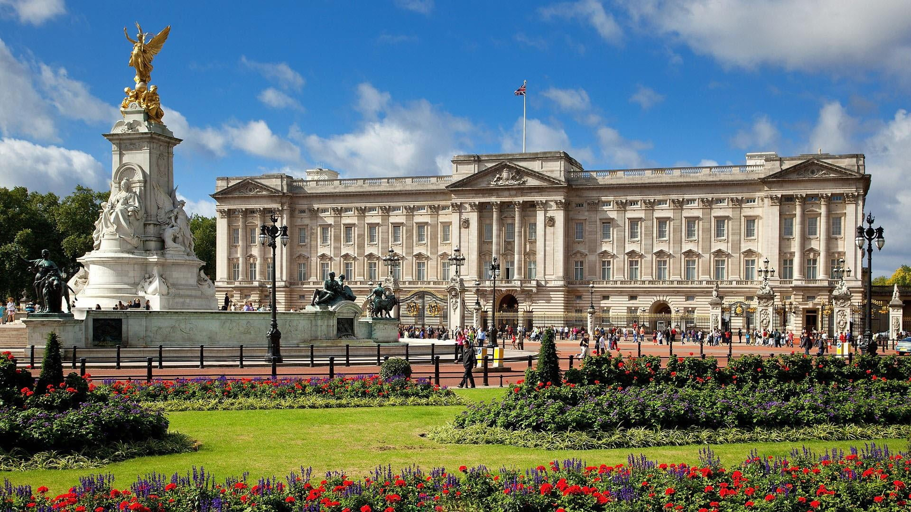
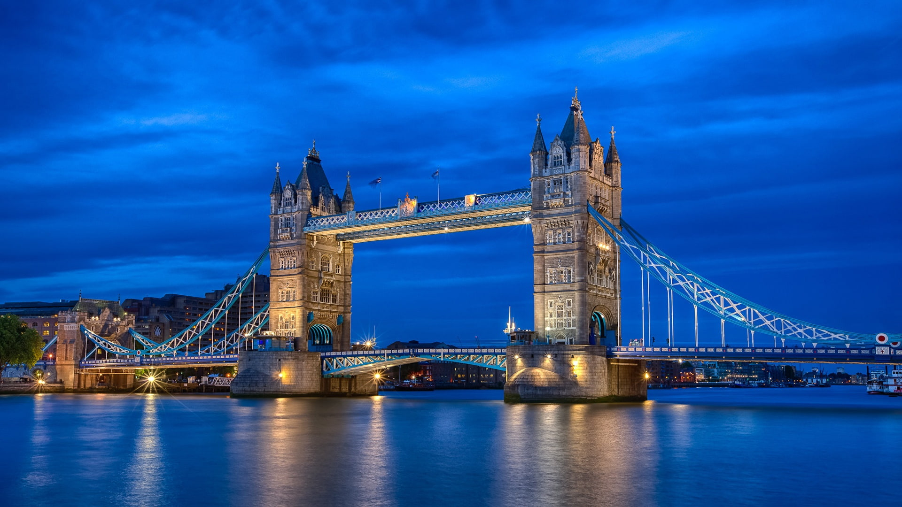

London
London is the capital and largest city of England and the United Kingdom. Standing on the River Thames in south-east England at the head of a 50-mile (80 km) estuary down to the North Sea, it has been a major settlement for two millennia. The City of London, its ancient core and financial centre, was founded by the Romans as Londinium and retains boundaries close to its medieval ones. Since the 19th century, "London" has also referred to the metropolis around this core, historically split between the counties of Middlesex, Essex, Surrey, Kent, and Hertfordshire, which largely makes up Greater London, the region governed by the Greater London Authority. The City of Westminster, to the west of the City, has for centuries held the national government and parliament.
Big Ben

Big Ben is the nickname for the Great Bell of the striking clock at the north end of the Palace of Westminster, although the name is frequently extended to refer also to the clock and the clock tower. The official name of the tower in which Big Ben is located was originally the Clock Tower, but it was renamed Elizabeth Tower in 2012, to mark the Diamond Jubilee of Elizabeth II, Queen of the United Kingdom.
The tower was designed by Augustus Pugin in a neo-Gothic style. When completed in 1859, its clock was the largest and most accurate four-faced striking and chiming clock in the world. The tower stands 316 feet (96 m) tall, and the climb from ground level to the belfry is 334 steps. Its base is square, measuring 40 feet (12 m) on each side. Dials of the clock are 22.5 feet (6.9 m) in diameter. All four nations of the UK are represented on the tower in shields featuring a rose for England, thistle for Scotland, shamrock for Northern Ireland, and leek for Wales. On 31 May 2009, celebrations were held to mark the tower's 150th anniversary.
London Eye

The London Eye, or the Millennium Wheel, is a cantilevered observation wheel on the South Bank of the River Thames in London. It is Europe's tallest cantilevered observation wheel, and is the most popular paid tourist attraction in the United Kingdom with over 3 million visitors annually. It has made many appearances in popular culture.
The structure is 135 metres tall and the wheel has a diameter of 120 metres. When it opened to the public in 2000 it was the world's tallest Ferris wheel. Its height was surpassed by the 160 metres Star of Nanchang in 2006, the 165 metres Singapore Flyer in 2008, and the 167 metres High Roller (Las Vegas) in 2014. Supported by an A-frame on one side only, unlike the taller Nanchang and Singapore wheels, the Eye is described by its operators as "the world's tallest cantilevered observation wheel".
Buckingham Palace
Buckingham Palace is the London residence and administrative headquarters of the monarch of the United Kingdom. Located in the City of Westminster, the palace is often at the centre of state occasions and royal hospitality. It has been a focal point for the British people at times of national rejoicing and mourning.
Originally known as Buckingham House, the building at the core of today's palace was a large townhouse built for the Duke of Buckingham in 1703 on a site that had been in private ownership for at least 150 years. It was acquired by King George III in 1761 as a private residence for Queen Charlotte and became known as The Queen's House. During the 19th century it was enlarged, principally by architects John Nash and Edward Blore, who constructed three wings around a central courtyard. Buckingham Palace became the London residence of the British monarch on the accession of Queen Victoria in 1837.
Tower Bridge
Tower Bridge is a Grade I listed combined bascule and suspension bridge in London, built between 1886 and 1894, designed by Horace Jones and engineered by John Wolfe Barry. The bridge crosses the River Thames close to the Tower of London and is one of five London bridges owned and maintained by the Bridge House Estates, a charitable trust founded in 1282. The bridge was constructed to give better access to the East End of London, which had expanded its commercial potential in the 19th century. The bridge was opened by Edward, Prince of Wales and Alexandra, Princess of Wales in 1894.
The bridge is 800 feet (240 m) in length and consists of two 213-foot (65 m) bridge towers connected at the upper level by two horizontal walkways, and a central pair of bascules that can open to allow shipping. Originally hydraulically powered, the operating mechanism was converted to an electro-hydraulic system in 1972. The bridge is part of the London Inner Ring Road and thus the boundary of the London congestion charge zone, and remains an important traffic route with 40,000 crossings every day. The bridge deck is freely accessible to both vehicles and pedestrians, whereas the bridge's twin towers, high-level walkways and Victorian engine rooms form part of the Tower Bridge Exhibition.